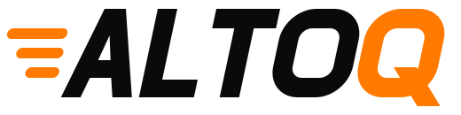
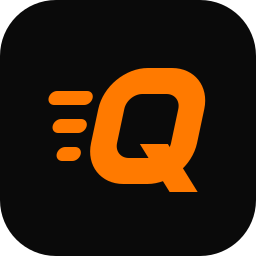

ALTOQ · hoja de marca
LOGO PRINCIPAL


ÍCONO (app, redes, favicon, pecho del polo)

COLORES
Negro ALTOQ
#0A0A0A
Naranja ALTOQ
#FF7A00
Blanco
#FFFFFF
IDEA
Letras en cursiva = movimiento. Tres líneas de velocidad = “al toque”. La Q en naranja es la firma: sola funciona como ícono, igual que un símbolo de marca deportiva. Lema: “Ponte ALTOQ.”